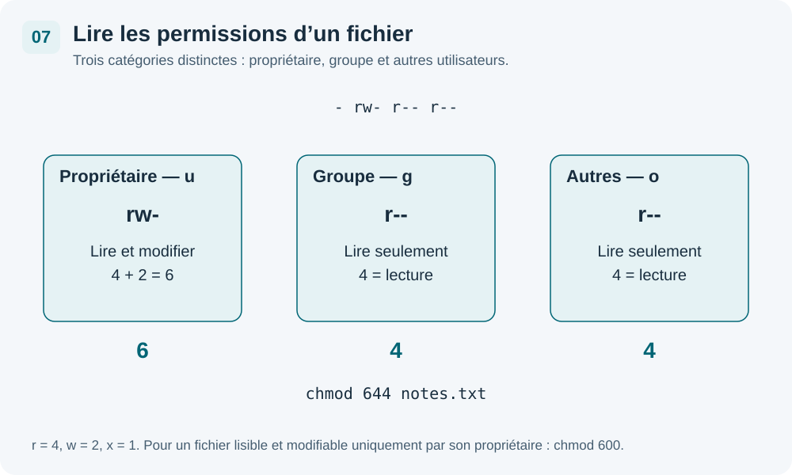

Le système multi-utilisateurs
Analogie
Un système Linux est comme un immeuble : chaque personne a sa clé (son compte), son appartement (/home/alice), et le gardien avec le passe-partout, c'est root.
L'utilisateur root
Root est le superutilisateur : il a tous les droits sur le système, sans aucune restriction.
Danger
Ne jamais travailler au quotidien en tant que root. Une seule erreur (ex:
rm -rf /) peut détruire tout le système sans confirmation.
Commandes d'identité
whoami # utilisateur courant id # UID, GID et groupes who # utilisateurs connectés groups # groupes de l'utilisateur courant
sudo — élévation ponctuelle
sudo permet d'exécuter une seule commande avec les droits root, sans se connecter en root. C'est la méthode recommandée.
sudo apt update sudo nano /etc/hosts
Les groupes
Chaque utilisateur appartient à un ou plusieurs groupes. Les permissions peuvent être attribuées à un groupe entier.
cat /etc/group # liste de tous les groupes
Gérer les comptes utilisateurs
Ces commandes nécessitent sudo.
Attention
Sur Debian, toujours utiliser
adduser (et non useradd) pour créer un compte interactivement. adduser crée automatiquement le dossier /home, demande le mot de passe, etc.
Commandes de gestion — cliquez pour détailler
Créer un utilisateur
sudo adduser aliceCrée l'utilisateur alice, son dossier
/home/alice, et demande interactivement un mot de passe et des informations.Changer le mot de passe
sudo passwd aliceChange le mot de passe de l'utilisateur alice. Sans argument (
passwd), change le mot de passe de l'utilisateur courant.Ajouter au groupe sudo
sudo usermod -aG sudo alice-a = append (ajouter sans retirer les autres groupes), -G = groupe. Donne à alice le droit d'utiliser sudo.Supprimer un utilisateur
sudo deluser aliceSupprime le compte alice, mais conserve le dossier
/home/alice et ses fichiers.Supprimer avec le /home
sudo deluser --remove-home aliceSupprime le compte ET le dossier personnel
/home/alice. Irréversible — vérifier avant.Modifier un groupe
sudo groupadd stagiairesCrée un nouveau groupe stagiaires. On peut ensuite y ajouter des utilisateurs avec
usermod -aG stagiaires alice.Récapitulatif rapide
sudo adduser alice # crée un utilisateur (interactif) sudo passwd alice # change le mot de passe sudo usermod -aG sudo alice # ajoute alice au groupe sudo sudo deluser alice # supprime l'utilisateur sudo deluser --remove-home alice # supprime aussi /home/alice
Lire et comprendre les permissions

Afficher les permissions
ls -l # liste détaillée avec permissions
Exemple de sortie :
-rw-r--r-- 1 stagiaire stagiaire 1234 notes.txt
Visualiseur de permissions — cliquez sur un bloc
-
type
|
r
w
-
u (propriétaire)
|
r
-
-
g (groupe)
|
r
-
-
o (autres)
Cliquez sur un caractère pour voir son explication.
Les 3 droits
| Lettre | Nom | Sur un fichier | Sur un dossier |
|---|---|---|---|
| r | read (lecture) | Lire le contenu du fichier | Lister les fichiers du dossier |
| w | write (écriture) | Modifier le fichier | Créer/supprimer des fichiers dans le dossier |
| x | execute (exécution) | Lancer le fichier comme programme | Entrer dans le dossier (cd) |
Les 3 catégories
| Lettre | Nom | Description |
|---|---|---|
| u | user | Le propriétaire du fichier |
| g | group | Le groupe associé au fichier |
| o | others | Tous les autres utilisateurs |
Modifier les permissions avec chmod
Mode symbolique
On désigne qui (u/g/o/a), l'opération (+/-/=) et le droit (r/w/x).
chmod u+x script.sh # ajoute exécution au propriétaire chmod g-w fichier.txt # retire écriture au groupe chmod o+r rapport.txt # donne lecture aux autres chmod a+x script.sh # donne exécution à tous (all)
Mode numérique (r=4, w=2, x=1)
On additionne les valeurs pour chaque catégorie (u/g/o) :
| Valeur | Droits | Explication |
|---|---|---|
| 7 | rwx | 4+2+1 = tout |
| 6 | rw- | 4+2 = lecture + écriture |
| 5 | r-x | 4+1 = lecture + exécution |
| 4 | r-- | 4 = lecture seule |
| 0 | --- | aucun droit |
chmod 644 fichier.txt # rw-r--r-- (fichier standard) chmod 755 script.sh # rwxr-xr-x (script exécutable) chmod 700 secret.txt # rwx------ (privé, personne d'autre)
Calculatrice chmod interactive
u — Propriétaire
g — Groupe
o — Autres
000
---------
chmod 000 fichier
chown — changer le propriétaire
sudo chown alice fichier.txt sudo chown alice:stagiaires fichier.txt # propriétaire:groupe sudo chown -R alice /home/alice/ # récursif sur tout le dossier
Récapitulatif des commandes
| Commande | Description | Catégorie |
|---|---|---|
whoami | Affiche l'utilisateur courant | users |
id | Affiche UID, GID et groupes | users |
who | Affiche les utilisateurs connectés | users |
sudo adduser alice | Crée un nouvel utilisateur (interactif) | users |
sudo passwd alice | Change le mot de passe d'alice | users |
sudo deluser alice | Supprime le compte alice | users |
sudo deluser --remove-home alice | Supprime le compte et le /home | users |
groups | Affiche les groupes de l'utilisateur courant | groupes |
cat /etc/group | Liste tous les groupes du système | groupes |
sudo usermod -aG sudo alice | Ajoute alice au groupe sudo | groupes |
sudo groupadd stagiaires | Crée un nouveau groupe | groupes |
ls -l | Affiche les permissions des fichiers | |
chmod 644 fichier | Droits rw-r--r-- (fichier standard) | |
chmod 755 script.sh | Droits rwxr-xr-x (script exécutable) | |
chmod u+x script.sh | Ajoute l'exécution au propriétaire | |
chmod a+r fichier | Donne la lecture à tous | |
sudo chown alice fichier | Change le propriétaire du fichier | |
sudo chown -R alice /dossier/ | Chown récursif sur un dossier |